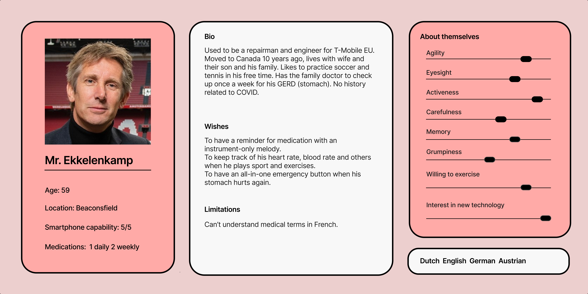
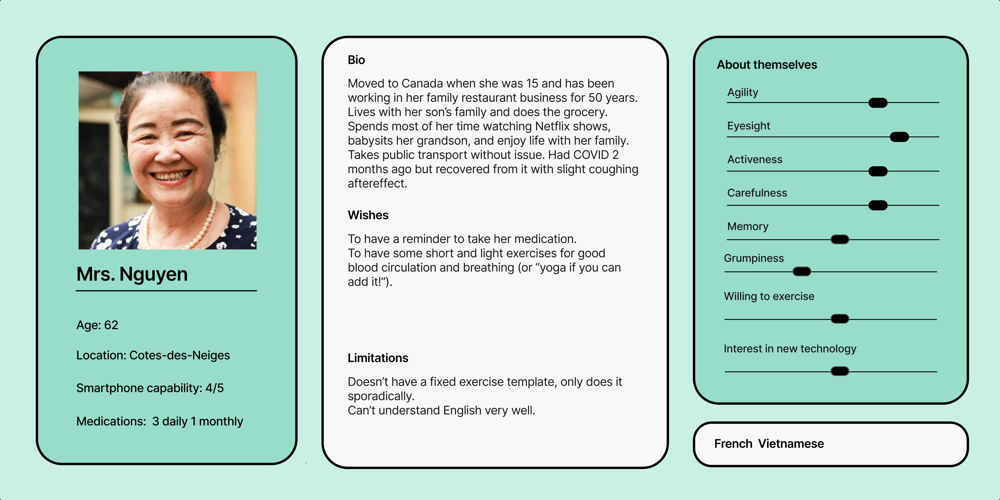

User Personas
To further understand the customers of our application, we have come up with some profiles to represent what we would call our ideal users, based on the researches conducted earlier.
 User Goals
These personas that were created helps us find what our user is looking for in our app. There are two
main goals for this app.
- The first one is to remind the user to take their medication on time.
- The second one is to give them a lot of options for exercise when they do not know what exercise to do.
Usability Goals
Here are some of the usability goals that we have identified for the elderly users
- Effectiveness: The app needs to allow the elderly to take their medication in a timely manner and do physical activities to maintain physical well-being.
- Safety: The app needs to ensure that the elderly safely consume the correct dosage of medication and safely execute the exercises without the risk of physical injuries.
- Learnability: The app needs to be easy to learn to encourage greater user adoption, especially since some elderly have the perception that technology is difficult to use.
- Memorability: The app will most likely be used daily so it needs to be easy for the user to remember how it works.
User Experience Goals
Some user experience goals for the elderly include ensuring the app is helpful, motivating, engaging, and cognitively stimulating.
User Journey
The user journey, shown below, describes the mindset of the user when they use our app. It helps us understand what the problems are when it comes to finding and using our app.
Storyboard
With this storyboard, we can find out how a user will interact with our app. It helps us understand their experience while using our app.